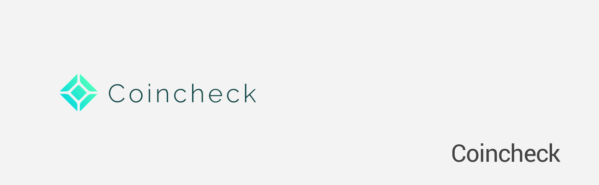

2016年コインチェックに2号社員/海外事業責任者として参画。事業開発を主にマーケ、人事、WEB開発、アライアンス、投資先の発掘、セミナー講師など幅広く担当。約500億円のハッキング時は国際機関と連携しハッカーの追跡をリード。M&A後に退職。

Interview
- WIRED - Speaker
- Cointelegraph
- Tristone
- Brave New Coin
- bitconnect
Media
- Reuters
- Coindesk
- The Stack
- Cointelegraph
- Bitcoin.com
- CCN.com
- GLOBAL TIMES
- Ripple XRP Listing